PERFORMANCE · CAMPAIGN · VISUAL IDENTITY
POSTERSARCHIVE
공연과 캠페인의 개념을 한 장면에 응축하고,ARA KOREA의 시각적 역사를 시간 위에 펼칩니다.

무대의 감각과 시대의 메시지를 시각 언어로 모아프로젝트가 변화해 온 시간을 한눈에 보여줍니다무대의 감각과 시대의 메시지를 시각 언어로 모아 프로젝트가 변화해 온 시간을 한눈에 보여줍니다
포스터는 공연의 분위기와 캠페인의 목적, 제작 당시의 문화적 관심을 가장 압축적으로 보여주는 기록입니다. 서로 다른 색과 이미지, 타이포그래피는 ARA KOREA가 예술과 사회를 연결해 온 방식과 각 프로젝트의 고유한 정체성을 전합니다.
Fourteen Visual Records
최신 작업에서 초기 캠페인까지 이어지는14점의 공식 포스터를 만나보세요.
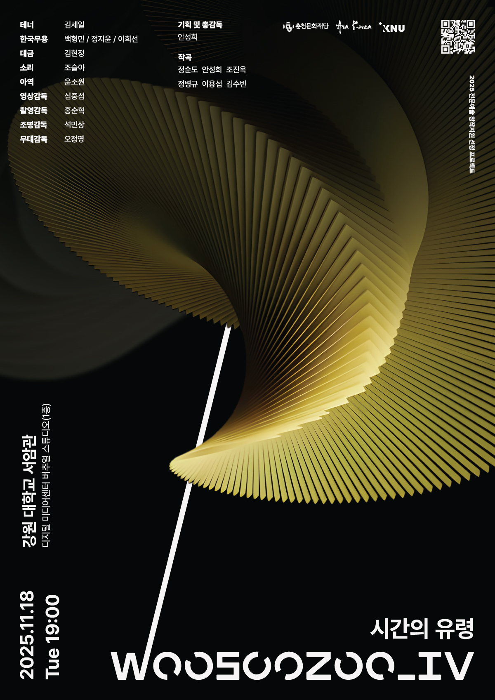
PERFORMANCE POSTER · 2025
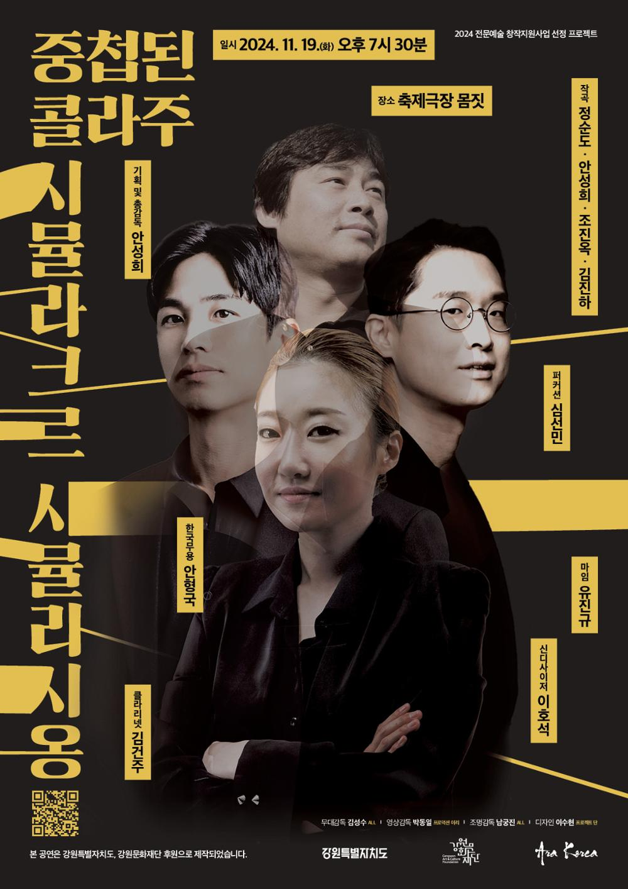
PERFORMANCE POSTER · 2024
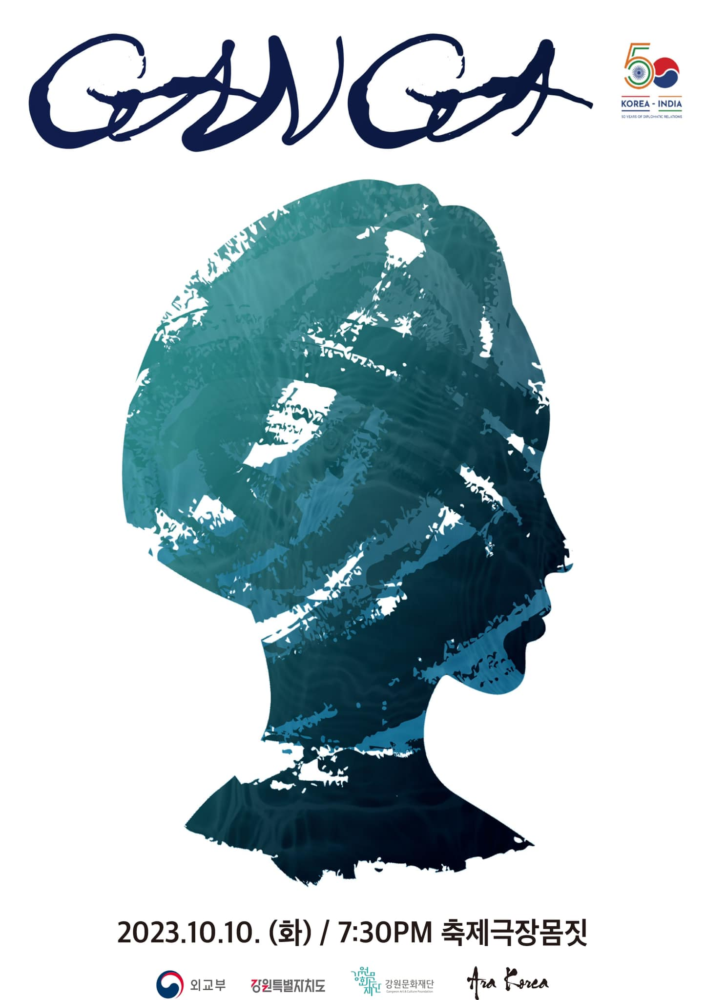
PERFORMANCE POSTER · 2023

PERFORMANCE POSTER · 2022

PERFORMANCE POSTER · 2022
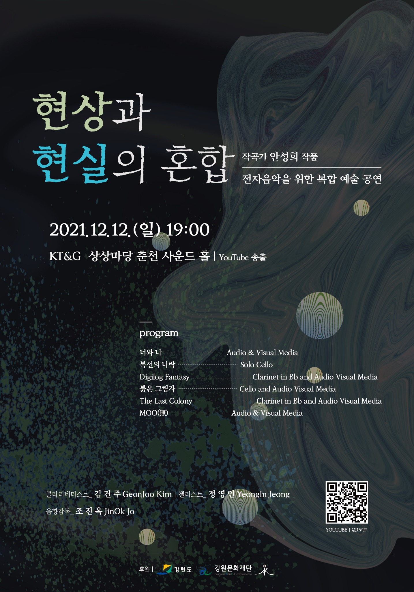
PERFORMANCE POSTER · 2021
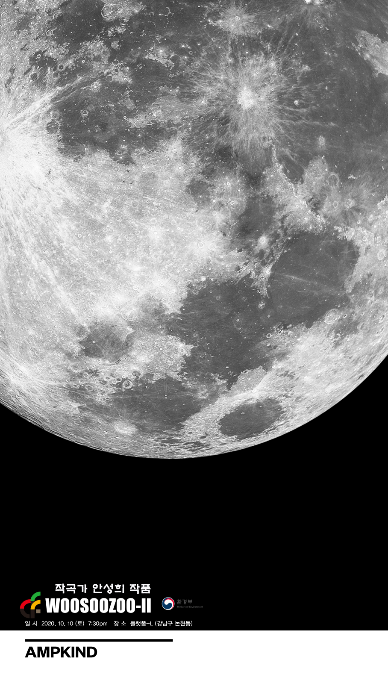
PERFORMANCE POSTER · 2020
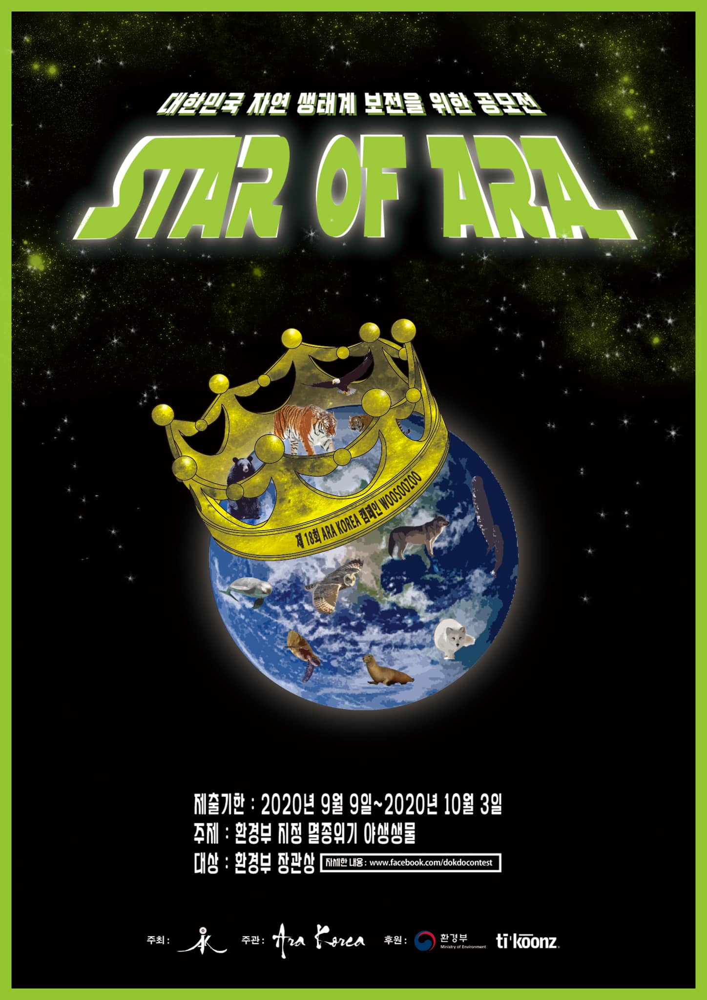
CAMPAIGN POSTER · 2020
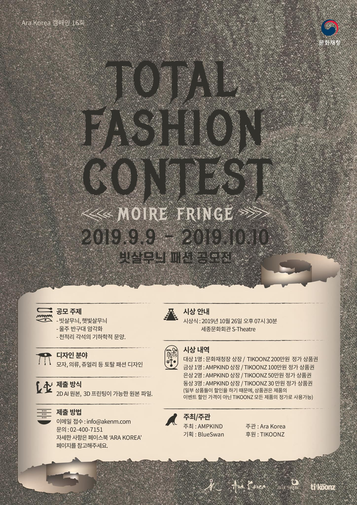
CAMPAIGN POSTER · 2019
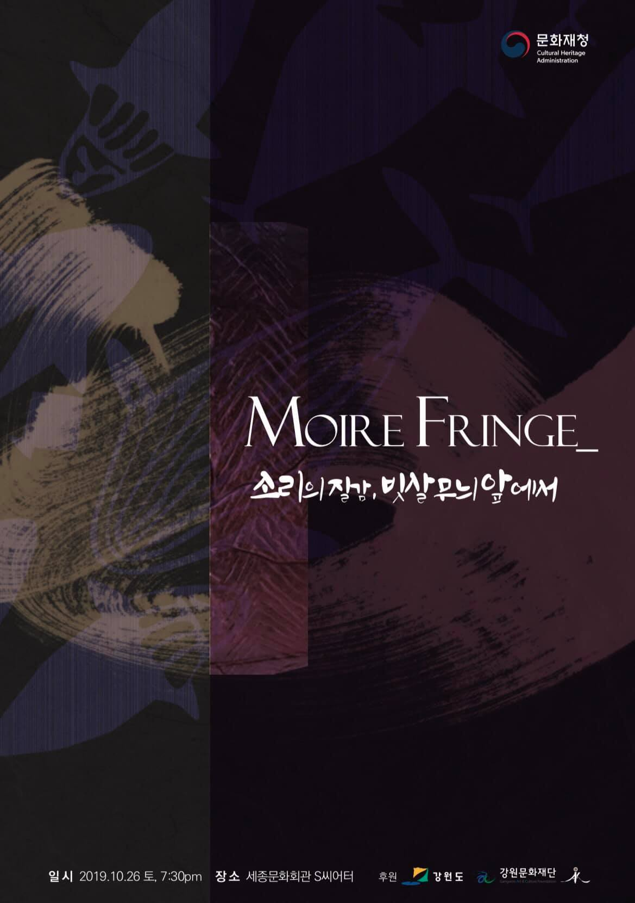
PERFORMANCE POSTER · 2019
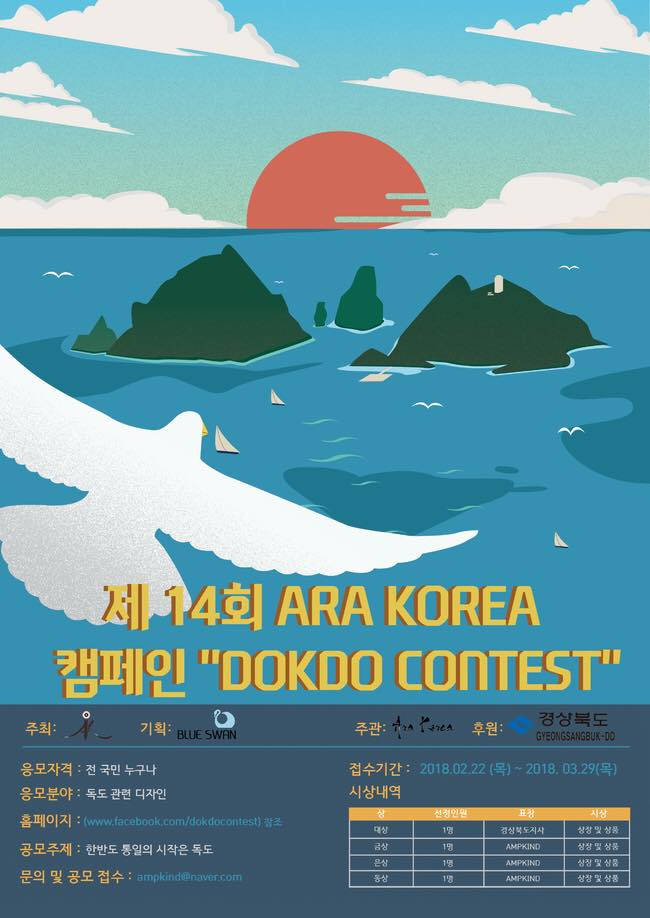
CAMPAIGN POSTER · 2018

PERFORMANCE POSTER · 2018
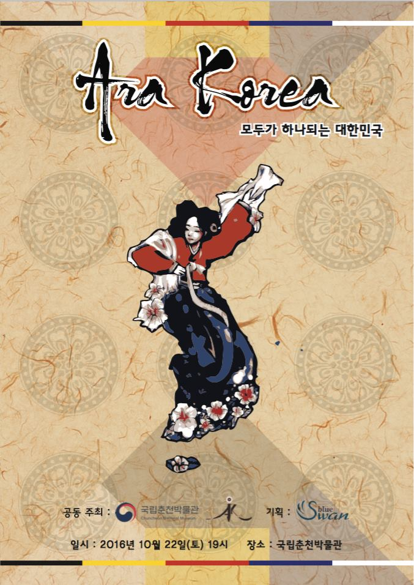
CAMPAIGN POSTER · 2016
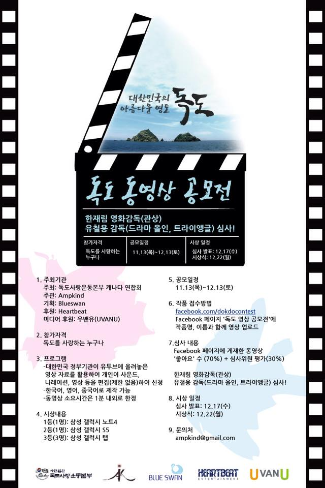
CAMPAIGN POSTER · 2014
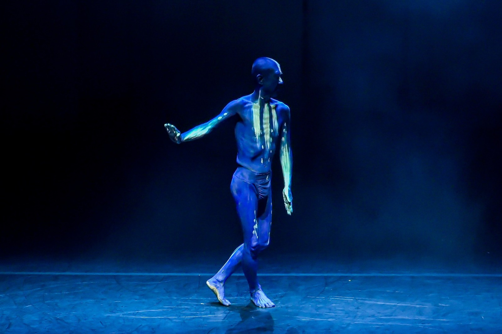
EACH POSTER HOLDS A TIME
Visual Memory in Motion
포스터에 담긴 이미지와 글자는 작품이 세상에 처음 모습을 드러낸 순간을 간직합니다. 10여 년의 기록을 함께 살펴보면 공연예술, 환경, 전통문화, 국제교류로 넓어져 온 ARA KOREA의 관심과 시각 언어의 변화를 확인할 수 있습니다.
Return to Portfolio